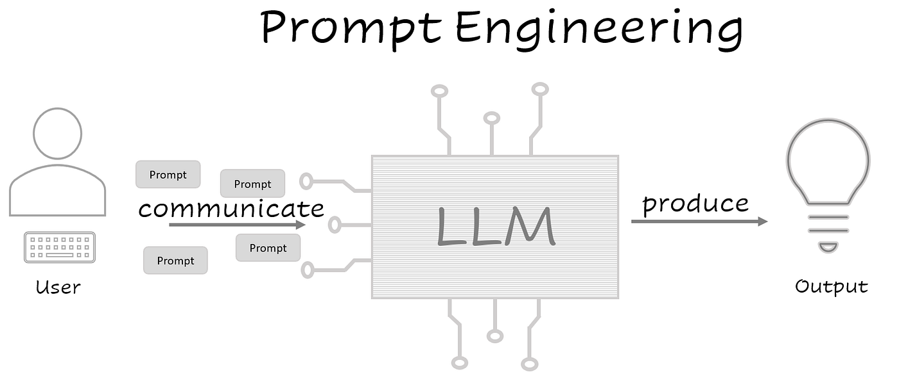

Introduction to Prompt Engineering
Prompt Engineering is the process of designing and
structuring inputs
(called prompts) to effectively communicate with
Artificial Intelligence (AI) models such as
ChatGPT, GPT-4, or other
Large Language Models (LLMs).
A prompt is the instruction, question, or input given to an AI system
to generate a response.
The quality of the prompt directly affects the
quality,
accuracy, and
relevance of the AI’s output.
Prompt engineering focuses on crafting
clear,
specific, and
well-structured prompts
so that AI systems can produce
better and
more useful responses.

Understanding the Process of Crafting Effective AI Prompts
Role
Defines the specific persona or function the AI should adopt (e.g., a teacher, a programmer, or a creative writer), setting the tone and perspective for the response.
Task
Outlines the precise objective or action the AI is expected to perform (e.g., summarizing text, generating a story, or answering a question), providing a clear goal.
Instructions
Offers detailed, step-by-step guidance on how the task should be executed, including any specific requirements or constraints (e.g., word count, tone, or format).
Context
Provides relevant background information or situational details to ensure the AI understands the scenario, enhancing the relevance and accuracy of the output.
Input
Represents the raw data, query, or user-provided information that the AI processes to generate a response, acting as the starting point for the interaction.
The Core Objective
The primary goal is to guide the model's latent space to produce results that are accurate, relevant, and properly formatted. Unlike traditional programming, Prompt Engineering relies on Natural Language Processing (NLP) techniques.
Precision
Direct instructions eliminate ambiguity and broad generalizations.
Efficiency
Well-crafted prompts save compute tokens and reduce latency.
Safety
Reduces the risk of hallucinations and inappropriate model behavior.
Best Practices for AI Prompting
Effective prompt engineering is an iterative science. By following these industry-standard best practices, you can minimize "AI Hallucinations" and ensure the highest output quality.
Be Direct & Positive
Tell the AI what to do rather than what not to do. Models process affirmative instructions much more accurately than negative constraints.
Order Matters
Place your most important instructions at the very beginning or the very end of the prompt. This leverages the model's "recency bias."
Use Temperature Settings
For factual tasks (coding/math), use lower temperature (0.1 - 0.3). For creative tasks (writing), use higher temperature (0.7 - 0.9).
Provide "Output Hallucination" Outs
Always tell the model: "If you do not know the answer, state that you do not know." This prevents the AI from making up facts.
The Prompting Checklist
- Clarity: Did I use specific nouns instead of ambiguous pronouns?
- Persona: Did I assign a relevant role (e.g., "Act as a Data Scientist")?
- Format: Did I define exactly how the response should look (Markdown, Table, JSON)?
- Few-Shot: If the task is complex, did I provide at least 2 examples?